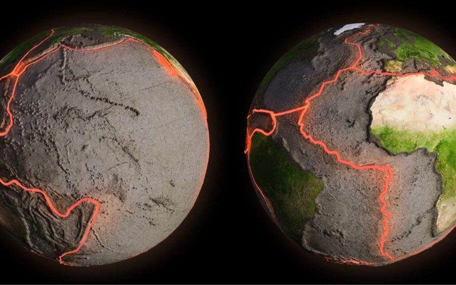
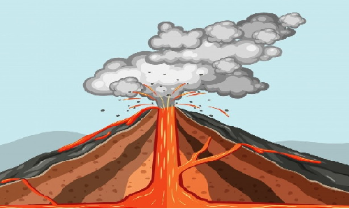

| L&O&A | Como surgem?
Uma vez ativos, outra vez adormecidos...
Como ocorre o "nascimento" de um vulcão?

O "nascimento" de um vulcão é um processo muito demorado, no entanto muito simples. A
crosta da terra,
sua
camada mais externa, é formada por diversas placas tectônicas, que flutuam sobre o manto e estão em
constante movimento, como visto na imagem.
Esse constante movimento gera diversos pontos em que essas placas se colidem diretamente (movimento
convergente de subducção), deslizam lado a lado (movimento convergente de obducção) ou se afastam (movimento
divergente).
Nos casos em que ocorre essas colisões diretas, temos uma placa tectônica que passa a ir
em direção ao centro da terra e a outra se posiciona por cima desta. Isso causa em algumas regiões op
surgimento de cadeias de montanhas e em outros o surgimento de um vulcão, que é bem semelhante a uma
montanha, tendo, no entanto, um ponto em que há uma falha na placa, podendo ser uma saída para o magma do
manto.
Agora, nessa imagem à direita, vemos mais facilmente essa relação da placa tectônica com o vulcão em
si. O ponto onde a placa está "danificada", logo abaixo da câmara magmática (que é a parte central), é a
direta influência desses
movimentos antes citados, neste caso, o movimento convergente de
subducção.
| Nome | Tipo | Última erupção | Primeira ascensão |
|---|---|---|---|
| Monte Fuji | Estratovulcão | 1707 | 663 |
| Pinatubo | Estratovulcão | 1991 | ≅1500 |
| Monte St. Helena | Estratovulcão | 1980 | 1853 |
| Todos os três se encontram próximos ao Círculo de Fogo do Pacífico | |||